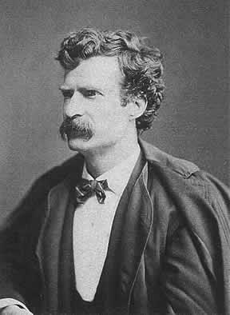
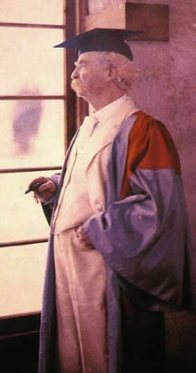

|

Texto de
Susana
Lopes de Alexandria
Episdio
faz homenagem a Mark Twain

|
Muitos fs devem ter se perguntado
quem era aquele velhinho simptico e perspicaz do episdio "Time's
Arrow". O roteirista resolveu incluir no enredo um
personagem real da cultura americana, o escritor e humorista
Samuel Clemens (1835-1910). Mais conhecido pelo seu pseudnimo
Mark Twain, Clemens um cone americano cujo humor
afiado e gnio inimitvel tem entretido leitores h mais de um
sculo. Suas afirmaes bem-humoradas sobre os mais
variados assuntos so presena obrigatria em qualquer livro de
citaes famosas (Leia abaixo algumas das frases mais famosas e
espirituosas de Mark Twain).
 Nascido e criado s margens do rio Mississipi, no Missouri, Mark Twain descobriu seu talento literrio durante o perodo em que trabalhou numa grfica local, onde tinha acesso a centenas de livros, os quais devorava avidamente. Em 1861, comeou a escrever para um jornal da Virgnia e, em 1863, passou a utilizar o pseudnimo Mark Twain em seus artigos, nos quais fazia comentrios sarcsticos sobre a sociedade americana. Seu primeiro livro, A Famosa R Saltadora do Condado de Calaveras (The Celebrated Jumping Frog of Calaveras County), de 1865, causou sensao, alando seu autor condio de celebridade nacional. Seus dois livros mais famosos so As Aventuras de Tom Sawyer (The Adventures of Tom Sawyer), de 1876, e a seqncia Huckleberry Finn, de 1884, considerada sua obra-prima. Alm do realismo no uso da lngua e de seus memorveis personagens, Mark Twain tambm conhecido por seu dio hipocrisia e opresso. Seu livro Um Ianque na Corte do Rei Arthur (A Connecticut Yankee in King Arthur's Court), de 1889, por exemplo, uma stira opresso feudal. E o romance Pudd'nhead Wilson, de 1894, uma crtica ao racismo no sul dos Estados Unidos. Nos ltimos trs anos de sua vida, Mark Twain dedicou-se sua autobiografia, concluda com a morte de sua esposa. Quatro meses mais tarde, em abril de 1910, o escritor faleceu em Redding, Connecticut.
 Frases de Mark TwainAs notcias sobre minha morte so
um grande exagero. H trs tipos de mentiras: mentiras, mentiras deslavadas e estatsticas. Primeiro voc apura os fatos, depois pode distorc-los vontade. Um clssico aquilo que todo mundo queria ter lido e ningum quer ler. Uma mentira pode cruzar de um lado a outro do mundo enquanto a verdade ainda est calando os sapatos. Quando estiver com raiva, conte at dez; quando estiver com muita raiva, xingue. A sagrada paixo da amizade to doce, estvel, leal e resistente que durar para sempre - se no lhe pedirem dinheiro emprestado. Boas maneiras consistem em esconder o quanto pensamos em ns mesmos e quo pouco pensamos nos outros. Poucas coisas so to difceis de tolerar quanto um irritante bom exemplo. Quando lembramos que somos todos loucos, os mistrios desaparecem e a vida se explica. Tudo o que voc precisa nesta vida ignorncia e autoconfiana, a o sucesso certo. S uma coisa impossvel para Deus: encontrar algum sentido em qualquer lei de copyright do planeta. Quando eu tinha 14 anos, meu pai era to ignorante que eu no suportava t-lo por perto. Mas quando fiz 21 anos, fiquei impressionado ao ver o quanto ele havia aprendido em sete anos. O que seriam os homens sem as mulheres? Escassos, senhor, extremamente escassos. Parar de fumar a coisa mais fcil do mundo. Eu sei porque j parei milhares de vezes. Na semana passada declarei que
aquela era a mulher mais feia que eu j tinha visto. Depois disso
a irm dela veio falar comigo, ento agora eu gostaria de
retirar minha declarao. |